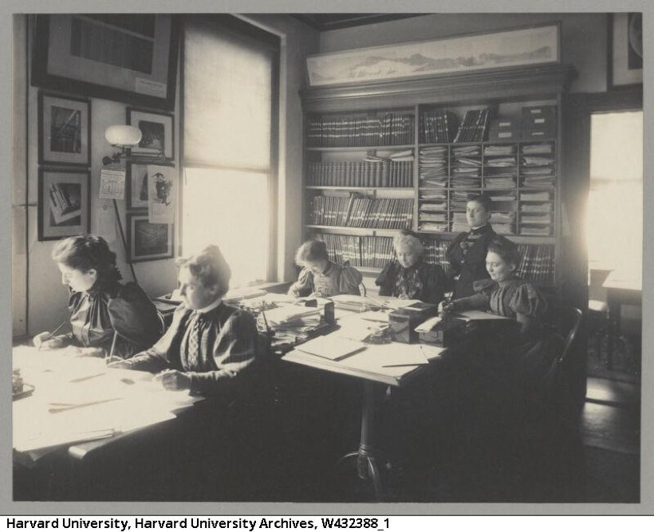

CH 4Stratification and Discrimination
Does science reward the best work, or does work become the best by being rewarded?
The number the chapter opens on
Of the 55 Nobel laureates working in the United States in 1963, 34 had studied or collaborated with one of 46 previous prize-winners. And the ones who had worked with a laureate before doing their own important research collected their prizes at an average age of 44, against 53 for everyone else.
Then the question the whole chapter is built on, in Sismondo's own framing. Are those clusters the tip of a merit-based iceberg, or artefacts of a prestige system gone wrong? Is the knowledge elites are recognised for intrinsically valuable, or does it become valuable because of its association with elites?
Two predictions on the record, both wrong. Francis Bacon, in the week 2 packet, thought his inductive method would level the differences between intellects and let science be industrialised: anyone following the procedure would do useful work. Three hundred years later the Spanish philosopher José Ortega y Gasset claimed science had progressed thanks in great part to the work of men astoundingly mediocre, and even less than mediocre.
The distributions say otherwise. Roughly 10 per cent of scientific authors produce 50 per cent of all papers. An estimated 80 per cent of citations go to 20 per cent of papers. Science is not flat and it is not a machine that runs on interchangeable operators. Bacon and Ortega are both wrong about its structure.
A warning about the measuring instrument, which is Box 4.1
Citation counts are the evidence for everything above, so the chapter stops to ask whether they measure anything. The assumption is that a citation records an influence: this paper gave me important background, so I cite it.
Sismondo says that is an idealisation, and the reason is what a scientific paper actually is. A paper that looks like an account of an experiment is a rational reconstruction of one. Details are cleaned up, idiosyncrasies are left out, and the order of events is changed to make the right narrative. The paper is an argument.
From which it follows that its citations are vehicles for the argument. They are chosen for what will persuade the intended audience. Informal conversation, the thing somebody told you at a conference, the paper too obvious to cite, all of it is invisible. Citations can also do several jobs at once. His conclusion is flat: citation analysis is a poor tool for studying communication and influence.
He then uses the numbers anyway, on the grounds that they are so lopsided that even a crude measure carries the point. Which is a move worth noticing, because it is the shape of a lot of arguments in this field: the instrument is bad, the signal is big, and the author carries on with the caveat stated.
The same numbers, two opposite policies
This is the most useful three paragraphs in the chapter, because it shows a fact doing no work on its own.
Jonathan and Stephen Cole read the figures as efficiency. If 80 per cent of citations go to 20 per cent of papers, put the funding where the influential work is. Science is already stratified; funding should reflect that. Most of the less-cited papers need not have been written, and given how often the same discovery is made independently, the work would have happened anyway.
Stephen Turner and Daryl Chubin read the same figures as waste. The Coles' conclusion rests on an assumption that the top 20 per cent are cited because they are intrinsically more valuable. Deny that, and the numbers say science is ignoring a majority of perfectly good work. The policy then goes the other way: level the playing field, reduce the effects of prestige and old-boy networks.
What the disagreement turns on, in Sismondo's words, is how accurate science's system of recognition is. And that question is difficult to answer, which is why the same table supports both policies.
Both camps assume the publication is where scientific value lives. Chandra Mukerji suggests oceanography gets government support because it maintains a pool of skilled oceanographers who can be called on when needed. On that account the papers are almost a by-product and the standing capability is the thing being funded. Elsewhere, skills and knowledge move into the world directly, as laboratory tools and products, without passing through a journal at all. Sismondo does not think either alternative is right in general. He raises them to show what a narrow focus on publications leaves out.
What makes a scientist productive, and why the lists are useless
No single variable dominates. One survey builds a portrait of the most productive scientist as someone who is driven, has a strong ego, acts autonomously, plays with ideas, tolerates ambiguity, is at home with abstractions, is detached from non-scientific social relations, reserves mornings for writing, works on routinised problems, is relatively young, went to a prestigious graduate school, had a prestigious mentor, is at a prestigious employer, has freedom to choose problems, has a history of success, and has been cited before.
A later study offers shorter adjectives, in order of importance: persistent, smart, civil, creative, entrepreneurial, aggressive, tasteful, confident, adaptable.
Sismondo's verdict on both lists is worth copying. Many of the items are uncontroversial and none of them is particularly helpful to somebody trying to understand scientific processes. Peak productive years cluster around the mid-forties, and nobody knows why or what would change it. Persistence may matter enormously, and the sources of persistence are unclear. A list of correlates is not an explanation.
One variable does something, though, and it is the one that matters. Scientists at prestigious institutions are strikingly more productive, and institutional prestige is a strong predictor.
The obvious explanation is selection, and the evidence rules it out. Do prestigious departments simply hire people who were going to be more productive anyway? Not in general: the differences in productivity emerge after people have been hired. And it is hard to imagine any hiring committee picking that consistently, in a job market that is almost always tight, between candidates whose potential differs very slightly.
So prestige is doing something. Better facilities. Better networks. More intellectual stimulation. More internal pressure and reward. Or simply more visibility, and therefore more reward for the same work, which Sismondo states as a conclusion with an exclamation mark: if that is right, then prestige by itself makes people's research valuable.
The Matthew Effect, which is the chapter's engine
Robert Merton named it after a line in the Gospel of Matthew: to whoever has, more shall be given, and from whoever has not, even what he has shall be taken away.
The mechanism is a chain where each link is small and the compounding is not. Somebody with the traits on those lists is more likely to get a famous mentor. A famous mentor makes a prestigious graduate school more likely. That makes a prestigious department more likely. That brings better facilities, better conversation, and above all more visibility. More visibility means more citations. And citation is itself a reward: people whose work is cited go on publishing. The sociologist Randall Collins calls citations sources of emotional energy.
Discrimination, and the numbers he puts behind it
His framing is that women are worse represented the more elite the grouping, and the figures step down accordingly.
- United States, 2005. Women earned 46 per cent of doctorates in the social sciences, natural sciences and engineering, up from 31 per cent a decade before. But 49 per cent in the biological sciences and 18 per cent in engineering.
- United States, 2006. Only 19 per cent of senior faculty in those areas were women, heavily concentrated in the life and social sciences.
- Europe. Only 15 per cent of senior university faculty across all fields. And the variation between countries is enormous: in 2003 women earned 72 per cent of life science and 45 per cent of physical science doctorates in Italy, against 47 and 23 per cent in Germany. Senior medical faculty: 22 per cent women in the UK, 6 per cent in Germany.
- Japan stands out among large research nations as particularly gendered, with smaller percentages of women researchers of every kind than the United States or any European country.
- And in most countries women are unlikely to be gatekeepers: editors of major journals, chairs of important boards.
The country variation is the part to think about. Italy and Germany are both rich European countries with good universities, and the gap between 72 and 47 per cent has nothing to do with biology. Whatever is producing these numbers travels with the culture.
Box 4.2: the golden age that was a dark age
Margaret Rossiter's history of women scientists in America turns on one finding, and it is counter-intuitive: feminisation is linked to a fall in status, and masculinisation to a rise in it. The direction of causation is from who holds the jobs to how the jobs are regarded.
What that produced, twice. When women began entering scientific fields in the 1860s and 1870s, the men already there perceived that their work was losing its masculine status, and pushed women into marginal positions where they would be invisible. In the twentieth century women found they could enter much more easily through new fields, home economics and nutritional science, where they could do sociology, economics, biology and chemistry under another name. The fields as a whole were then poorly regarded, because they were feminised.

And the sentence in the box that people quote. Women's colleges had been a safe place for women scientists to work and build credentials. After the Second World War, as American universities expanded, those colleges and the less prestigious universities followed the leading ones in hiring more men. The golden age of American science after the war was a dark age for women in it.
What changed it was not science. The shift came in the 1960s, from outside: the National Organization for Women, Betty Friedan, and Alice Rossi's 1965 article in Science titled "Women in Science: Why So Few?", which made the case that science was no different from any other profession. Alongside that ran a legal revolution producing anti-discrimination law and affirmative action, which women then used as resources to get in.
The pipeline, and why Sismondo half rejects it
The standard metaphor is Natalie Angier's. Women flow through a pipe with leaks at every joint along its span, a pipe that begins with a high-pressure surge of young women at the source, a roiling Amazon of smart graduate students, and ends at the spigot with a trickle of women prominent enough to be deans or department heads or to win a Nobel Prize.
His objection is that the picture makes the problem one of leakage, which puts all the attention at the joints and none at either end. The metaphor only works if you also attend to intake, blockage and filters: processes of inclusion and exclusion. In many fields there is no roiling Amazon at the source to begin with, and the women who are there do not simply leak out, they are discouraged the whole way along.
The framing he prefers is Sara Delamont's three problems, and they are the three sub-headings of the rest of the chapter: getting in, staying in, and getting on.
Getting in
Science and engineering have masculine images and the stereotypical scientist is male, and that shapes what girls believe about their own capacity. Quite young girls may find it hard to think of themselves as potential scientists, and in many environments they are actively discouraged by teachers, peers and parents. The consequence is structural and not merely attitudinal: by the end of secondary school many girls who might have been interested already lack the background subjects they would need to study science at university. The door closes before anybody applies.
An analysis of the advertising in the journal Science found, in its own words, more cultural content between the covers than we would care to acknowledge. Men are more likely to be depicted as scientific heroes. They are also more likely to be shown as nerds or nonconformists, and more likely to be shown at play. The words simple and easy go with pictures of women; fast, reliable and accurate go with pictures of men. And a female figure can stand as a symbol of nature in a way a male figure cannot, which puts women on the side of the thing being investigated.
Staying in
The concept to take from this section is the unofficial PhD programme. Alongside the official courses, exams and research there runs a second curriculum: study groups, pick-up basketball, informal mentoring, and simply the ongoing conversation and consultation of a department. Even a well-integrated student can be shut out of parts of it.
We would all go to parties together and go and have beer on Friday, but if somebody came in to ask what drying agent to use to clean up THF, they would never ask me. It just wasn't something that would cross their minds.
Then the hardest number in the chapter. A study of peer review scores for postdoctoral fellowships at the Swedish Medical Research Council found reviewers rating men's accomplishments as overwhelmingly more valuable than apparently equivalent accomplishments by women. To be given the same competence score as a male colleague, a woman needed to exceed his scientific productivity by about three extra papers in Nature or Science, or twenty extra papers in an excellent specialist journal.
And a clash of clocks. Shirley Tilghman, a molecular biologist and later president of Princeton, argues that the pressure at the start of a career falls hardest on women. Research productivity decides whether a senior graduate student or postdoc gets a permanent job, and new faculty then have about six years to clear an all-or-nothing tenure hurdle. Those are exactly the years in which women are most likely to want to have children.
Getting on
The discriminations at this stage are individually small enough to argue about. Women hired at the same time as male peers tend to have smaller laboratories, and to have negotiated worse arrangements for start-up grants, for the overhead the university takes from their research money, for salary and for teaching load.
And they remain outside the informal networks. Inside their departments they tend not to have informal mentors to steer them through opaque processes. Outside them they do less collaborative research. And they are less well connected to the networks that carry unpublished work, which leaves them more dependent on the published literature and therefore always slightly behind. Sismondo quotes Jonathan Cole's formulation: women have moved into science, but they are not of the community of science.
Which is where the Matthew Effect returns and does the argument's real work. In any individual case these differences look trivial, and a woman may well shrug them off. But if competition is strong enough, and if advantage compounds, the small irritants are enough on their own to keep her from getting on. No single act of discrimination has to be large.
The maths gene, and what he says about it
One side claims a biological propensity. Claims of a maths gene or something like it go back to 1980, and as recently as 2005 the president of Harvard, Lawrence Summers, invoked biology to explain differences in men's and women's success in science and engineering.
Sismondo's reply is two lines and both are worth having. First, genes only act in environments, so a claim that a difference is genetic, stated without the environment, is an ideological statement wearing the clothes of a finding. Second, the claim runs against the trend: boys' and girls' test scores in mathematics have been converging.
The other side claims a difference in style, and he reports it without endorsing it. A number of feminists and non-feminists have argued that women tend to think in more concrete terms, are better served by problem-centred learning, think more relationally, and produce more holistic pictures. He parks the whole question for chapter 7, which is the feminist epistemology material and which is weeks 5 to 7 of this course.
The conclusion, and the question it leaves open
What cumulative advantage buys the argument is a mechanism, a way of explaining how something as vague as a culture produces effects as concrete as a salary. No single obstacle decisively keeps women out of the pipeline or ejects them from it. The compounded effect of all of them may be enough. And it explains why individual women's accounts of succeeding and not succeeding can sound completely different from one another and still fit a pattern.
Then the sentence the chapter title has been leading to. With discrimination in view, science is hard to see as efficiently using its resources. It looks less like an efficient meritocracy and more like an inefficient old boys' network, in which people and ideas become important partly because of where they sit in a social network.
And the claim that connects this chapter to the next one. Elite groups are socially constructed. They are not reflections of a natural hierarchy. He concedes immediately that elites do produce more and better knowledge, because they have the advantages and the reinforcement. The open question is the one he started with and does not close: does some of the knowledge elites are recognised for become important because of its association with them, and could science be significantly different if it were more egalitarian?
- Answers
- Bacon, chapter 4 of the week 2 packet, by name. Bacon predicted the method would level intellectual differences; the citation distributions say it did not.
- Rests on
- Chapter 3, which is not set, on Merton's norms of science. The line just before this chapter begins is about whether those norms shape real behaviour even when applied flexibly.
- Sets up
- Chapter 6, below: if elite groups are socially constructed, the obvious next question is what construction means. And chapter 7, which is weeks 5 to 7 of this course.
If you keep one thingSuccess in science compounds: a small early advantage produces a better mentor, a better department, more visibility and more citations, and citation is itself a reward that produces more work. So a gap too small to call unfair at any single step ends up large, which is how a culture with no single villain in it produces a measurably unequal profession.
The verse is Matthew 13:12, and Merton knew exactly what he was doing
The line is from the parable of the sower: to whoever has, more will be given, and from whoever has not, even what he has will be taken away. In the gospel it is about receptivity to a teaching. Merton borrowed it in 1968 for a paper about how scientific credit accumulates, and the borrowing is sardonic: a verse about spiritual reward describing a funding system.
His wife, the sociologist Harriet Zuckerman, did the underlying research on Nobel laureates, which is the study this chapter opens with. Merton acknowledged that her work was so central that the paper should have been co-authored, and said so publicly, years later.
The Harvard computers were paid by the star
Edward Pickering hired women at the Harvard College Observatory from the 1880s because they could be paid 25 to 50 cents an hour, roughly half a man's wage, and because the work of measuring and cataloguing photographic plates was considered clerical. Around eighty women worked there over four decades.
What they produced was not clerical. Annie Jump Cannon classified some 350,000 stars and devised the spectral scheme, O B A F G K M, that astronomy still uses. Henrietta Swan Leavitt discovered that a certain kind of variable star pulses at a rate fixed by its brightness, which gave astronomy its first reliable way of measuring distance beyond our own galaxy. Hubble used her relation to show the universe is expanding, and said she deserved a Nobel Prize. She had died four years before he could nominate her, and the prize is not awarded posthumously.
The Summers speech cost him the job
In January 2005 Lawrence Summers, then president of Harvard, spoke at a conference on diversifying the science workforce and offered three explanations for why women are under-represented at the top of science: that they are less willing to work eighty-hour weeks, that there is a difference in the distribution of innate aptitude at the high end, and discrimination, which he ranked last.
One attendee walked out. The transcript was released a month later. The Harvard Faculty of Arts and Sciences passed a motion of no confidence in March, the first in the university's history, and he resigned in February 2006. He later pledged 50 million dollars of Harvard money to diversity efforts. His successor was Drew Gilpin Faust, the first woman to lead Harvard in its then 371 years.
Jane Dee ran an experimental household
Box 4.3 of the chapter is about women just outside the formal borders of science. Its example is Jane Dee, wife of the Elizabethan mathematician and alchemist John Dee, who kept the largest library in England at their house in Mortlake and a laboratory alongside it.
Natural philosophy in that period was done at home, which made the household a laboratory and the wife its manager. Jane Dee had to run an establishment full of apparatus, assistants and visitors, act as a full partner in the work, and at the same time occupy a position Elizabethan society had no name for. The point of studying her is not to recover a hidden discovery. It is that the boundary between the household and the laboratory is where the line around science was drawn, and somebody was standing on it.